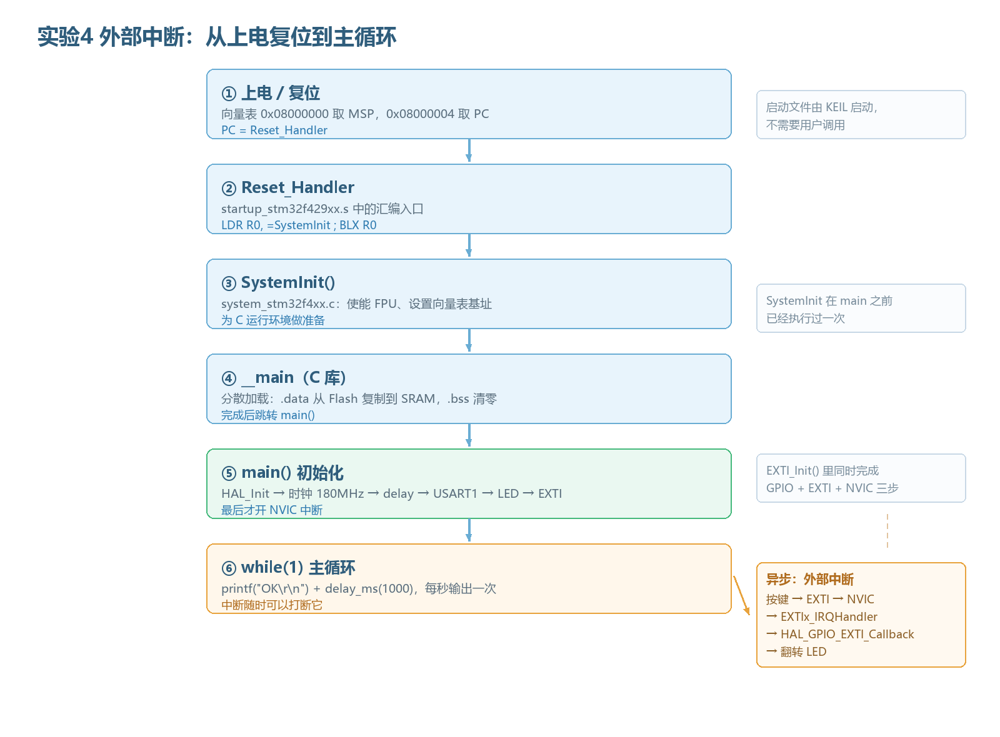
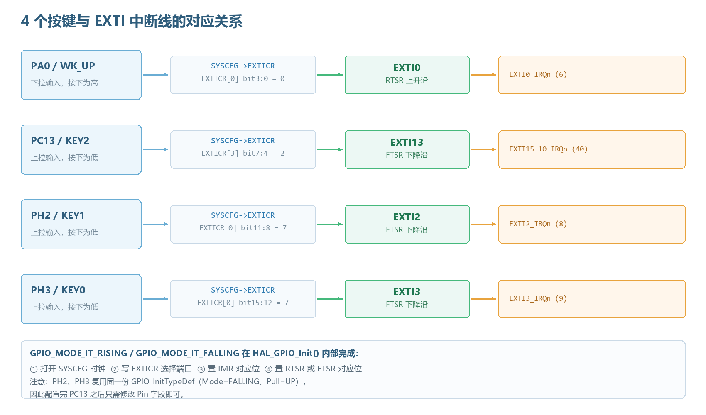
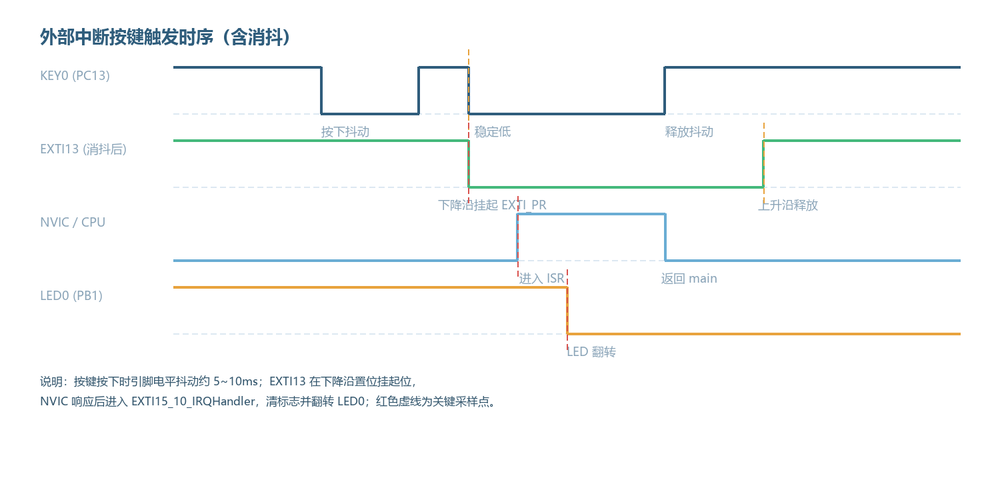
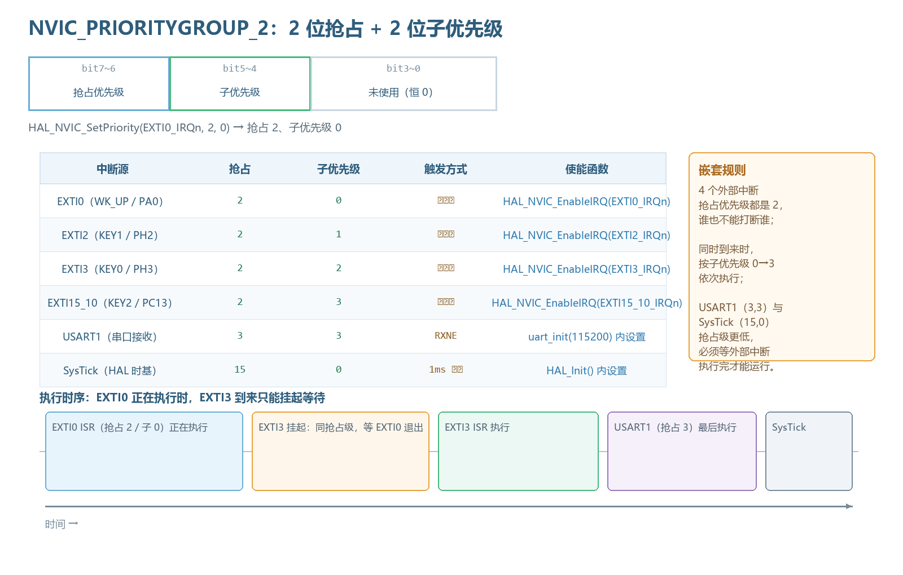
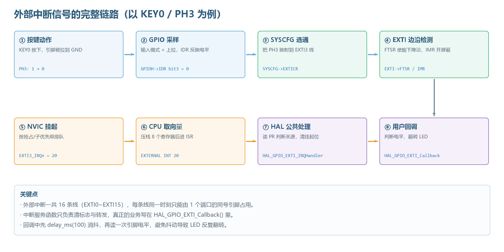
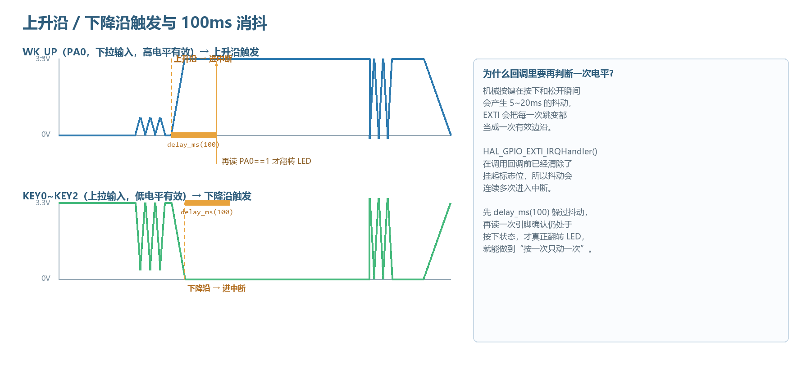

01 实验概述与硬件资源
实验2 的按键输入采用轮询：主循环不断调用 KEY_Scan() 读取引脚，只有程序执行到扫描函数时才能发现按键。本实验改为外部中断：按键引起的电平跳变直接触发 EXTI，CPU 暂停主循环、进入中断服务函数完成 LED 翻转，处理完再返回原来的位置继续执行。
| 对比项 | 实验2：按键轮询 | 实验4：外部中断 |
|---|---|---|
| 发现按键的时机 | 主循环执行到 KEY_Scan 时 | 边沿出现后立即响应（微秒级） |
| 主循环负担 | 需要周期性扫描，占用 CPU | 主循环可以做别的事，如打印 OK |
| 消抖方式 | 扫描函数内 delay_ms(10) | 回调函数内 delay_ms(100) |
| 关键代码 | KEY_Scan() 返回值 + switch | EXTI_Init() + HAL_GPIO_EXTI_Callback() |
硬件资源
| 器件 | 引脚 | 配置 | 有效电平 | 说明 |
|---|---|---|---|---|
| DS0（LED0） | PB1 | 推挽输出 | 低电平点亮 | #define LED0 PBout(1) |
| DS1（LED1） | PB0 | 推挽输出 | 低电平点亮 | #define LED1 PBout(0) |
| KEY0 | PH3 | 输入 + 上拉 | 低电平有效 | 下降沿触发 EXTI3 |
| KEY1 | PH2 | 输入 + 上拉 | 低电平有效 | 下降沿触发 EXTI2 |
| KEY2 | PC13 | 输入 + 上拉 | 低电平有效 | 下降沿触发 EXTI13 |
| WK_UP | PA0 | 输入 + 下拉 | 高电平有效 | 上升沿触发 EXTI0 |
实验现象
| 按键 | 相关中断线 | 现象 |
|---|---|---|
| WK_UP（PA0） | EXTI0 | DS0 与 DS1 互斥点亮：按一次，亮的那颗灭、灭的那颗亮 |
| KEY2（PC13） | EXTI13 | DS0 翻转一次 |
| KEY1（PH2） | EXTI2 | DS1 翻转一次 |
| KEY0（PH3） | EXTI3 | DS0、DS1 同时翻转 |
key.c，但 main.c 与 exti.c 都没有调用 KEY_Init() 或 KEY_Scan()。四个按键的输入模式与上下拉，是在配置 EXTI 的同一次 HAL_GPIO_Init() 中完成的。02 工程目录与文件分工
| 目录 / 文件 | 作用 | 本实验关注点 |
|---|---|---|
| USER/main.c | 程序入口，按顺序调用各初始化函数 | 最后一个初始化是 EXTI_Init() |
| USER/stm32f4xx_it.c | Cortex-M4 异常处理（NMI、HardFault、SysTick） | SysTick_Handler 调用 HAL_IncTick() |
| USER/system_stm32f4xx.c | SystemInit()：FPU、向量表基址 | main 之前由启动文件调用 |
| CORE/startup_stm32f429xx.s | 向量表、Reset_Handler、各中断的弱定义 | EXTI0/2/3/15_10 的入口地址 |
| HARDWARE/EXTI/exti.c | 外部中断初始化、4 个中断服务函数、用户回调 | 本实验的核心文件 |
| HARDWARE/KEY/key.h | 按键引脚宏与键值定义 | WK_UP / KEY0~KEY2 的读取宏 |
| HARDWARE/LED/led.c | PB0、PB1 推挽输出初始化 | 上电默认输出高，灯灭 |
| SYSTEM/delay | 基于 SysTick 的 us/ms 延时 | 回调里的 delay_ms(100) 消抖 |
| SYSTEM/usart | USART1 初始化与 printf 重定向 | 主循环每秒打印 OK |
| SYSTEM/sys | 位带操作宏（PAin/PBout 等） | LED0/LED1 通过位带写 ODR |
| HALLIB | ST 官方 HAL 驱动 | hal_gpio.c 中的 EXTI 配置与公共中断处理 |
main.c → exti.c 的 EXTI_Init() → stm32f4xx_hal_gpio.c 的 HAL_GPIO_Init() 与 HAL_GPIO_EXTI_IRQHandler() → 回到 exti.c 的回调。这样能把“配置”和“响应”两条线串起来。03 启动流程总览
外部中断虽然由按键“随时”触发，但它能被触发的前提是：时钟已经打开、GPIO 已切换为中断模式、SYSCFG 已完成映射、EXTI 已开屏蔽、NVIC 已使能。这些步骤全部在 main() 的初始化阶段完成，因此仍然要按启动顺序理解代码。

main.c 全文
#include "sys.h"
#include "delay.h"
#include "usart.h"
#include "led.h"
#include "exti.h"
int main(void)
{
HAL_Init(); // 初始化 HAL 库
Stm32_Clock_Init(360,25,2,8); // 设置时钟，180MHz
delay_init(180); // 初始化延时函数
uart_init(115200); // 初始化 USART1
LED_Init(); // 初始化 LED
EXTI_Init(); // 外部中断初始化
while(1)
{
printf("OK\r\n"); // 打印 OK，提示程序运行
delay_ms(1000); // 每隔 1s 打印一次
}
}
这 6 行初始化并不是随意排序的：
HAL_Init()建立 HAL 的时基与优先级分组，之后所有HAL_Delay、超时判断才有意义；Stm32_Clock_Init()把系统时钟从复位后的 HSI 16MHz 提升到 180MHz；delay_init(180)告诉延时函数“1us 需要 180 个 SysTick 计数”；uart_init()、LED_Init()分别准备串口与指示灯；EXTI_Init()放在最后，等所有依赖（时钟、GPIO、NVIC 分组）都就绪后再开中断；- 进入
while(1)后主循环只做打印，按键由中断异步处理。
EXTI_Init() 提到 Stm32_Clock_Init() 之前，GPIO/SYSCFG 的时钟频率尚未确定，虽然多数情况下仍能工作，但属于依赖未满足的写法，工程上应避免。04 启动文件与中断向量表
Cortex-M4 规定：地址 0x08000000 存放初始 MSP，0x08000004 存放复位向量。之后每 4 字节一个异常/中断入口。异常号 n 的入口地址为：
向量地址 = 0x08000000 + 4 × (16 + n) // 前 16 个是内核异常
| 中断 | 异常号 n | 入口地址 | 本实验对应的引脚 |
|---|---|---|---|
| EXTI0_IRQHandler | 6 | 0x08000058 | PA0 / WK_UP |
| EXTI2_IRQHandler | 8 | 0x08000060 | PH2 / KEY1 |
| EXTI3_IRQHandler | 9 | 0x08000064 | PH3 / KEY0 |
| EXTI15_10_IRQHandler | 40 | 0x080000E0 | PC13 / KEY2 |
启动文件中用 DCD 把这些地址填进向量表，并用 EXPORT ... [WEAK] 给出弱定义。用户只要在 exti.c 里写出同名函数，链接器就会用强符号覆盖弱符号，向量表自然指向用户的函数。
DCD EXTI0_IRQHandler ; EXTI Line0 DCD EXTI1_IRQHandler ; EXTI Line1 DCD EXTI2_IRQHandler ; EXTI Line2 DCD EXTI3_IRQHandler ; EXTI Line3 ... DCD EXTI15_10_IRQHandler ; External Line[15:10]s
SystemInit() 中还会执行 SCB->VTOR = FLASH_BASE | VECT_TAB_OFFSET，把向量表基址明确设为 0x08000000。这样即使程序中有 Bootloader 或地址偏移，内核也能找到正确的入口。
EXTI15_10_IRQHandler。所以 KEY2（PC13）的中断里必须通过 GPIO_PIN_13 判断来源，不能想当然地认为“这条中断只属于 PC13”。05 SystemInit 与 HAL_Init
SystemInit()：C 环境准备
SystemInit() 由启动文件的 Reset_Handler 在跳转 __main 之前调用，主要做三件事：
- 使能 FPU：
SCB->CPACR |= (3 << 20) | (3 << 22)，允许 CP10/CP11 全访问； - 把 RCC 恢复到复位状态（HSI 打开、PLL 关闭等），为后面的自定义时钟配置提供干净起点；
- 设置向量表基址
SCB->VTOR。
HAL_Init()：HAL 库的运行时基础
HAL_StatusTypeDef HAL_Init(void)
{
HAL_NVIC_SetPriorityGrouping(NVIC_PRIORITYGROUP_2); // 优先级分组 2
HAL_InitTick(TICK_INT_PRIORITY); // SysTick 1ms，优先级 0x0F
HAL_MspInit(); // 板级底层初始化
return HAL_OK;
}
| 动作 | 本工程取值 | 影响 |
|---|---|---|
| 优先级分组 | NVIC_PRIORITYGROUP_2 | 4 位优先级中，高 2 位为抢占、低 2 位为子优先级 |
| HAL 时基 | SysTick，1ms | HAL_Delay / HAL_GetTick 可用 |
| SysTick 优先级 | 0x0F（最低） | 不会打断任何外部中断 |
分组方式直接决定了第 09 节中 HAL_NVIC_SetPriority(EXTI0_IRQn, 2, 0) 的含义：抢占优先级 2、子优先级 0。若分组被改成 GROUP_4，则只有抢占没有子优先级，同样的参数会产生完全不同的嵌套行为。
06 时钟、延时与串口初始化
时钟：Stm32_Clock_Init(360,25,2,8)
参数依次为 PLLN、PLLM、PLLP、PLLQ。本工程外部晶振 HSE = 25MHz：
| 项目 | 计算 | 结果 |
|---|---|---|
| PLL 输入 | 25MHz ÷ PLLM(25) | 1MHz |
| VCO | 1MHz × PLLN(360) | 360MHz |
| SYSCLK | 360MHz ÷ PLLP(2) | 180MHz |
| USB/SDIO 时钟 | 360MHz ÷ PLLQ(8) | 45MHz |
| HCLK（AHB） | SYSCLK ÷ 1 | 180MHz |
| PCLK1（APB1） | 180MHz ÷ 4 | 45MHz |
| PCLK2（APB2） | 180MHz ÷ 2 | 90MHz |
配置顺序上，代码先开 Over-Drive、设置电压等级 Scale 1，再把 Flash 等待周期设为 5WS，最后才切换 PLL 并调用 HAL_RCC_ClockConfig()。切换完成后，HAL_RCC_ClockConfig() 会重新调用 HAL_InitTick()，把 SysTick 重装载值改为 180000，保证 1ms 时基不变。
延时：delay_init(180)
void delay_init(u8 SYSCLK)
{
HAL_SYSTICK_CLKSourceConfig(SYSTICK_CLKSOURCE_HCLK); // SysTick 时钟 = HCLK
fac_us = SYSCLK; // 1us 的计数次数 = 180
}
本工程 SYSTEM_SUPPORT_OS 为 0，delay_us() 采用轮询 SysTick->VAL 的方式计数，不依赖 SysTick 中断；delay_ms() 只是把 ms 换算成 us 后调用它。因此第 11 节回调里的 delay_ms(100) 在中断上下文中也能正常工作。
串口：uart_init(115200)
USART1 使用 PA9（TX）/PA10（RX），复用功能 AF7，波特率 115200。初始化时还设置了 NVIC 优先级 HAL_NVIC_SetPriority(USART1_IRQn, 3, 3) 并调用 HAL_UART_Receive_IT() 开启接收中断。它在本实验里主要用于 printf 输出，属于“低优先级后台任务”。
void LED_Init(void)
{
GPIO_InitTypeDef GPIO_Initure;
__HAL_RCC_GPIOB_CLK_ENABLE(); // 开启 GPIOB 时钟
GPIO_Initure.Pin = GPIO_PIN_0|GPIO_PIN_1; // PB0、PB1
GPIO_Initure.Mode = GPIO_MODE_OUTPUT_PP; // 推挽输出
GPIO_Initure.Pull = GPIO_PULLUP;
GPIO_Initure.Speed = GPIO_SPEED_HIGH;
HAL_GPIO_Init(GPIOB, &GPIO_Initure);
HAL_GPIO_WritePin(GPIOB, GPIO_PIN_0, GPIO_PIN_SET); // 默认高电平，灯灭
HAL_GPIO_WritePin(GPIOB, GPIO_PIN_1, GPIO_PIN_SET);
}
07 EXTI 初始化：GPIO 一侧
void EXTI_Init(void)
{
GPIO_InitTypeDef GPIO_Initure;
__HAL_RCC_GPIOA_CLK_ENABLE(); // 开启 GPIOA 时钟
__HAL_RCC_GPIOC_CLK_ENABLE(); // 开启 GPIOC 时钟
__HAL_RCC_GPIOH_CLK_ENABLE(); // 开启 GPIOH 时钟
GPIO_Initure.Pin = GPIO_PIN_0; // PA0
GPIO_Initure.Mode = GPIO_MODE_IT_RISING; // 上升沿触发
GPIO_Initure.Pull = GPIO_PULLDOWN;
HAL_GPIO_Init(GPIOA, &GPIO_Initure);
GPIO_Initure.Pin = GPIO_PIN_13; // PC13
GPIO_Initure.Mode = GPIO_MODE_IT_FALLING; // 下降沿触发
GPIO_Initure.Pull = GPIO_PULLUP;
HAL_GPIO_Init(GPIOC, &GPIO_Initure);
GPIO_Initure.Pin = GPIO_PIN_2|GPIO_PIN_3; // PH2、PH3
HAL_GPIO_Init(GPIOH, &GPIO_Initure); // 沿用 PC13 的 FALLING + PULLUP
}
为什么引脚要这样配
| 引脚 | 外部电路 | 上下拉选择 | 触发边沿 |
|---|---|---|---|
| PA0 / WK_UP | 按键接 VCC，另一端串电阻到地 | 内部下拉，松开时稳定为 0 | 按下由 0→1，选上升沿 |
| PC13 / KEY2 | 按键接 GND | 内部上拉，松开时稳定为 1 | 按下由 1→0，选下降沿 |
| PH2 / KEY1 | 按键接 GND | 内部上拉 | 下降沿 |
| PH3 / KEY0 | 按键接 GND | 内部上拉 | 下降沿 |
GPIO_MODE_IT_RISING 与 GPIO_MODE_IT_FALLING 并不是普通的输入模式，它们的数值中包含 GPIO_MODE_INPUT 与 EXTI_MODE 标志。HAL 在 HAL_GPIO_Init() 里识别到 EXTI_MODE 后，会顺手完成 SYSCFG 映射、EXTI 屏蔽与边沿选择，因此用户不需要再单独写寄存器。
GPIO_InitTypeDef：结构体里此时仍是 Mode = GPIO_MODE_IT_FALLING、Pull = GPIO_PULLUP，只是把 Pin 改成 GPIO_PIN_2|GPIO_PIN_3。这是嵌入式代码中常见的“复用配置”写法，前提是两次配置的电气属性确实一致。08 SYSCFG 映射与 EXTI 寄存器

HAL_GPIO_Init() 内部做了什么
if((GPIO_Init->Mode & EXTI_MODE) == EXTI_MODE)
{
__HAL_RCC_SYSCFG_CLK_ENABLE(); // ① 开 SYSCFG 时钟
temp = SYSCFG->EXTICR[position >> 2]; // ② 选择端口
temp &= ~(0x0F << (4 * (position & 0x03)));
temp |= (GPIO_GET_INDEX(GPIOx) << (4 * (position & 0x03)));
SYSCFG->EXTICR[position >> 2] = temp;
temp = EXTI->IMR; // ③ 中断屏蔽
temp &= ~iocurrent;
if((GPIO_Init->Mode & GPIO_MODE_IT) == GPIO_MODE_IT) temp |= iocurrent;
EXTI->IMR = temp;
temp = EXTI->RTSR; // ④ 上升沿
temp &= ~iocurrent;
if((GPIO_Init->Mode & RISING_EDGE) == RISING_EDGE) temp |= iocurrent;
EXTI->RTSR = temp;
temp = EXTI->FTSR; // ⑤ 下降沿
temp &= ~iocurrent;
if((GPIO_Init->Mode & FALLING_EDGE) == FALLING_EDGE) temp |= iocurrent;
EXTI->FTSR = temp;
}
| 寄存器 | 作用 | 本实验取值 |
|---|---|---|
| SYSCFG->EXTICR[0] | EXTI0~EXTI3 的端口选择 | bit3:0=0（PA0）、bit11:8=7（PH2）、bit15:12=7（PH3） |
| SYSCFG->EXTICR[3] | EXTI12~EXTI15 的端口选择 | bit7:4=2（PC13） |
| EXTI->IMR | 中断屏蔽寄存器，置 1 表示允许产生中断 | bit0、bit2、bit3、bit13 置 1 |
| EXTI->RTSR | 上升沿触发选择 | 仅 bit0（PA0） |
| EXTI->FTSR | 下降沿触发选择 | bit2、bit3、bit13 |
| EXTI->PR | 挂起寄存器，1 表示有事件待处理 | 中断中写 1 清除 |
EXTICR 中用 4 位表示端口编号：PA=0、PB=1、PC=2、PD=3、PE=4、PF=5、PG=6、PH=7。每个寄存器管理 4 条线，线号 n 对应 EXTICR[n/4] 的第 (n%4)*4 位起的 4 位。

09 NVIC 优先级与使能
// 中断线 0 - PA0
HAL_NVIC_SetPriority(EXTI0_IRQn, 2, 0); // 抢占优先级 2，子优先级 0
HAL_NVIC_EnableIRQ(EXTI0_IRQn);
// 中断线 2 - PH2
HAL_NVIC_SetPriority(EXTI2_IRQn, 2, 1);
HAL_NVIC_EnableIRQ(EXTI2_IRQn);
// 中断线 3 - PH3
HAL_NVIC_SetPriority(EXTI3_IRQn, 2, 2);
HAL_NVIC_EnableIRQ(EXTI3_IRQn);
// 中断线 13 - PC13（与 EXTI10~15 共用入口）
HAL_NVIC_SetPriority(EXTI15_10_IRQn, 2, 3);
HAL_NVIC_EnableIRQ(EXTI15_10_IRQn);

本工程在 HAL_Init() 中设定 NVIC_PRIORITYGROUP_2，STM32F429 实现了 4 位优先级，因此分组后：
- 高 2 位（bit7~6）为抢占优先级，决定能否打断正在执行的中断；
- 低 2 位（bit5~4）为子优先级，只在多个中断同时挂起时决定谁先执行，不能嵌套；
- bit3~0 未实现，读出为 0。
四个外部中断的抢占优先级都是 2，所以它们之间不会互相打断；子优先级 0→1→2→3 只影响“同时到来”时的排队顺序。USART1 的抢占优先级是 3，SysTick 是 15，都低于外部中断，因此按键中断可以先于串口接收和 HAL 时基得到响应。
10 中断服务函数与公共处理

exti.c 中的四个中断服务函数
void EXTI0_IRQHandler(void)
{
HAL_GPIO_EXTI_IRQHandler(GPIO_PIN_0); // 调用中断处理公用函数
}
void EXTI2_IRQHandler(void)
{
HAL_GPIO_EXTI_IRQHandler(GPIO_PIN_2);
}
void EXTI3_IRQHandler(void)
{
HAL_GPIO_EXTI_IRQHandler(GPIO_PIN_3);
}
void EXTI15_10_IRQHandler(void)
{
HAL_GPIO_EXTI_IRQHandler(GPIO_PIN_13); // 这条线还包含 EXTI10~EXTI12、14、15
}
HAL 的公共处理函数
void HAL_GPIO_EXTI_IRQHandler(uint16_t GPIO_Pin)
{
if(__HAL_GPIO_EXTI_GET_IT(GPIO_Pin) != RESET) // 读 EXTI->PR 判断来源
{
__HAL_GPIO_EXTI_CLEAR_IT(GPIO_Pin); // 写 1 清除挂起位
HAL_GPIO_EXTI_Callback(GPIO_Pin); // 转到用户回调
}
}
__HAL_GPIO_EXTI_GET_IT() 读取 EXTI->PR 的对应位，__HAL_GPIO_EXTI_CLEAR_IT() 向该位写 1 清除。清除动作发生在回调之前，这一点很关键：如果在清除后、回调执行期间引脚又发生抖动，PR 会再次置位，中断退出后会立刻重新进入。第 12 节的 100ms 延时就是为了规避这种重复进入。
HAL_GPIO_EXTI_Callback() 在 HAL 中是 __weak 空函数，用户在 exti.c 里重新定义同名函数即可覆盖，不需要修改 HAL 源码。
11 回调函数中的业务逻辑
void HAL_GPIO_EXTI_Callback(uint16_t GPIO_Pin)
{
delay_ms(100); // 消抖：等抖动结束再判断
switch(GPIO_Pin)
{
case GPIO_PIN_0: // WK_UP / PA0，上升沿
if(WK_UP == 1)
{
LED1 = !LED1; // 控制 LED0、LED1 互斥点亮
LED0 = !LED1;
}
break;
case GPIO_PIN_2: // KEY1 / PH2，下降沿
if(KEY1 == 0)
{
LED1 = !LED1; // DS1 翻转
}
break;
case GPIO_PIN_3: // KEY0 / PH3，下降沿
if(KEY0 == 0)
{
LED0 = !LED0; // DS0、DS1 同时翻转
LED1 = !LED1;
}
break;
case GPIO_PIN_13: // KEY2 / PC13，下降沿
if(KEY2 == 0)
{
LED0 = !LED0; // DS0 翻转
}
break;
}
}
动作与引脚宏的对应关系
| 回调分支 | 电平确认 | 执行动作 | 最终现象 |
|---|---|---|---|
| GPIO_PIN_0 | WK_UP == 1 | LED1 翻转，再令 LED0 = !LED1 | DS0 / DS1 互斥，始终只有一颗亮 |
| GPIO_PIN_2 | KEY1 == 0 | LED1 翻转 | DS1 状态改变 |
| GPIO_PIN_3 | KEY0 == 0 | LED0、LED1 各翻转一次 | DS0、DS1 同时改变 |
| GPIO_PIN_13 | KEY2 == 0 | LED0 翻转 | DS0 状态改变 |
引脚读取宏来自 key.h，最终调用 HAL_GPIO_ReadPin()：
#define KEY0 HAL_GPIO_ReadPin(GPIOH, GPIO_PIN_3) // 低有效 #define KEY1 HAL_GPIO_ReadPin(GPIOH, GPIO_PIN_2) #define KEY2 HAL_GPIO_ReadPin(GPIOC, GPIO_PIN_13) #define WK_UP HAL_GPIO_ReadPin(GPIOA, GPIO_PIN_0) // 高有效
LED 宏来自 led.h，通过位带直接写 GPIOB->ODR。由于 LED 是低电平点亮，写 0 亮、写 1 灭：
#define LED0 PBout(1) // DS0，PB1 #define LED1 PBout(0) // DS1，PB0
12 边沿触发与软件消抖

EXTI 检测的是“边沿”，不是“电平”。以 KEY0 为例：松开时上拉为高，按下瞬间变为低，下降沿使 EXTI->PR 的 bit3 置 1；如果 FTSR 的 bit3 已使能、IMR 的 bit3 也已打开，NVIC 就会收到 EXTI3 的请求。WK_UP 相反：下拉为低，按下变高，所以选择上升沿。
| 按键 | 松开电平 | 按下电平 | 边沿 | 触发寄存器位 |
|---|---|---|---|---|
| WK_UP | 0 | 1 | 上升沿 | RTSR.bit0 |
| KEY0 | 1 | 0 | 下降沿 | FTSR.bit3 |
| KEY1 | 1 | 0 | 下降沿 | FTSR.bit2 |
| KEY2 | 1 | 0 | 下降沿 | FTSR.bit13 |
抖动为什么会造成多次中断
机械触点在闭合瞬间会弹跳，电平在 5~20ms 内反复跳变。每一次“有效边沿”都会让 PR 置位，而 HAL_GPIO_EXTI_IRQHandler() 在回调前就清除了 PR；等回调执行完退出，如果抖动又产生了一个新边沿，CPU 会马上再次进入中断。结果就是按一次键，LED 被翻转多次。
本实验的解决办法
- 进入回调后先
delay_ms(100)，等抖动完全结束； - 再读一次引脚：
WK_UP==1或KEYx==0，确认按键仍处于按下状态； - 只有确认成功才翻转 LED，避免“松手抖动”被当成新的按键。
这种写法简单直观，但会在中断中阻塞 100ms。若系统还有更紧急的中断，它们会被推迟。工程上更常用的替代方案是：
- 记录时间戳，两次中断间隔小于 20ms 就忽略；
- 回调只置标志，主循环中做 10ms 定时扫描确认；
- 使用定时器输入捕获或专用按键扫描任务。
static key_up 标志实现“按一次只响应一次”；本实验没有这个标志，改用“100ms 延时 + 电平复核”来达到同样效果。两种思路可以互相替代。13 主循环与实验现象
while(1)
{
printf("OK\r\n"); // 通过 USART1 输出
delay_ms(1000); // 每秒一次
}
串口助手设置为 115200、8 位数据、1 位停止、无校验，会每隔 1 秒看到一行 OK。按键时，主循环并不参与检测：中断抢走 CPU，执行完回调后回到 delay_ms() 的剩余时间继续等待，所以串口的节奏基本不受影响。
| 操作 | 串口表现 | LED 表现 |
|---|---|---|
| 上电 | 每秒输出 OK | DS0、DS1 均灭（PB0/PB1 输出高） |
| 按 KEY2 | OK 继续输出，可能短暂延后 | DS0 翻转 |
| 按 KEY1 | 同上 | DS1 翻转 |
| 按 KEY0 | 同上 | DS0、DS1 同时翻转 |
| 按 WK_UP | 同上 | DS0/DS1 互斥切换，始终一灭一亮 |
14 实验总结与常见问题
完整流程回顾
- 启动：向量表 → Reset_Handler → SystemInit（FPU、VTOR）→ __main（分散加载）→ main；
- 基础环境：HAL_Init（分组 2、SysTick 1ms）→ 180MHz 时钟 → delay_init(180) → uart_init(115200) → LED_Init；
- GPIO 配置：开 GPIOA/C/H 时钟，PA0 上升沿下拉、PC13 下降沿上拉、PH2/PH3 沿用下降沿上拉；
- EXTI 配置：HAL_GPIO_Init 内部写 SYSCFG->EXTICR、EXTI->IMR、RTSR/FTSR；
- NVIC：四条中断线抢占优先级均为 2，子优先级 0/1/2/3，逐个使能；
- 响应：按键边沿 → PR 置位 → NVIC 挂起 → EXTIx_IRQHandler → HAL_GPIO_EXTI_IRQHandler（清 PR）→ HAL_GPIO_EXTI_Callback；
- 业务：delay_ms(100) 消抖，复核电平，按引脚号翻转对应 LED；
- 主循环：每秒打印 OK，与中断互不阻塞。
常见问题
| 现象 | 可能原因 | 排查方法 |
|---|---|---|
| 按键完全无反应 | NVIC 未使能、IMR 未打开、GPIO/SYSCFG 时钟未开 | 在 EXTI_Init() 末尾打断点，检查 EXTI->IMR、NVIC->ISER |
| 按一次灯闪多次 | 机械抖动导致重复进入中断 | 确认回调中保留了 delay_ms(100) 与电平复核 |
| 中断进不去 | 未调用 HAL_NVIC_EnableIRQ()，或中断名拼写与启动文件不一致 | 核对 startup_stm32f429xx.s 中的 EXTI15_10_IRQHandler 拼写 |
| WK_UP 与 KEY 行为反向 | 上下拉或边沿选错 | PA0 应下拉 + 上升沿；PC13/PH2/PH3 应上拉 + 下降沿 |
| 串口输出被拉长 | 中断里 delay_ms(100) 阻塞了主循环 | 属正常现象；可改用时间戳消抖 |
| 程序停在 HardFault | 中断函数名与向量表不匹配，或访问了未开时钟的外设 | 检查 SystemInit、时钟使能与中断入口 |